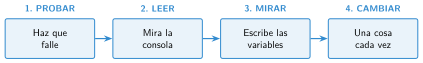

Depurar un programa: encontrar y corregir errores
🤔 Pienso5 min
Qué hago aquí: Piensa un momento y contesta con lo que ya sabes. No pasa nada si no lo sabes: es para empezar.
Instrucciones para ir a la biblioteca: sal del colegio, gira a la derecha, sigue recto, gira a la derecha, gira a la derecha. Si las sigues, vuelves al colegio. ¿Dónde está el error?
📖 Leo y aprendo15 min
Qué hago aquí: Lee despacio, mira los dibujos y los ejemplos, y quédate con la idea clave del final.
Todos los programadores se equivocan. Lo importante es encontrar el error. Buscar y corregir errores se llama depurar.

✏️ Hago25 min
Qué hago aquí: Haz las actividades en orden. Empieza siempre por las básicas.
Completa: buscar y corregir los errores de un programa se llama .
Une cada error con su tipo.
| Falta un paréntesis • | • De lógica |
| Suma puntos cuando fallas • | • Al funcionar |
| Usa un botón que no existe • | • De escritura |
Escribe los cuatro pasos para depurar.
Abre el proyecto con errores que te dé tu profesor. Encuentra uno y anota cómo lo has corregido.
Un programa dice «Aprobado» con un 4. La condición es nota > 3. ¿Qué tipo de error es? Corrígelo.
✏️ Puedes responder escribiendo, con un dibujo o un esquema, o contándolo en voz alta.
🚀 Amplío (si quieres saber más)
Qué hago aquí: ¿Has terminado? Lee la curiosidad o elige el reto. Es voluntario.
Esconde un error en un programa y cámbialo con un compañero. ¿Quién lo encuentra antes?
✅ Compruebo5 min
Qué hago aquí: Contesta sin mirar la ficha y marca cómo lo llevas.